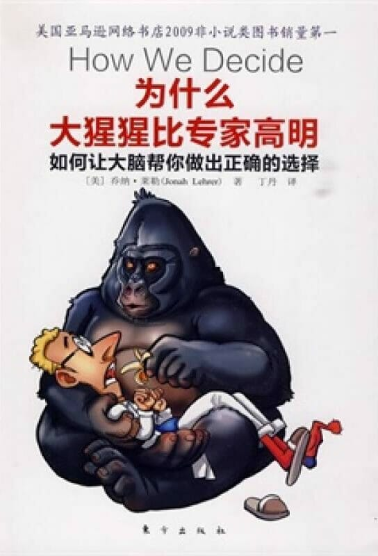

注：【】部分为笔者心得，非原文摘抄。2013 年 3 月 26 日。
- 要想做出正确的决定，既要利用理智的一面，又要利用情感的一面。
- 一个好的决策者知道怎么使用自己的大脑。
- 【在危急时刻作出正确的判断需要在平时进行大量的训练。】
- 【不要试图追求绝对理性！】
- 在大脑这个层面来看，人类是最情绪化的动物。
- 思考过程需要情绪情感，因为情绪情感能让我们理解那些不能直接理解的东西。
- 直觉往往有着惊人的洞察力。
- 大脑天生就对错误的预测有更强烈的反应。
- 专长不过是脑细胞通过不断犯错积累的智慧，犯错不该受到打击，相反，应该受到鼓励，并加以仔细反思。
- 教育成功的要素是从错误中学习。
- 当大脑面对任何随即事物，它会自动地给这个事物强加一个模式。
- 世界的随机性比我们想象的要大，我们的情绪脑就是不明白这一点。
- 【学会驾驭自己的情绪。】
- 人类决定中，损失重于收益。损失带来的痛苦感大于等量收益造成的快乐感。
- 感知变窄（Perceptual Narrowing）：恐慌的问题让人的思维变窄，把意识集中到最必要的事情上，集中到最基本的本能上。
- 理性的人能更好地调节情绪。
- 培养良好品质的关键就是学会管理自己的情绪。
- 【耐心就是运用理智控制冲动。】
- 青少年之所以做出愚蠢的决定，是因为从生理上讲他们本来就没那么理性。
- 顿悟需要心无杂念。
- 刻意冷静是理性决策的精华。
- 【思考过度会让大脑窒息，影响正常发挥。】
- 认真的自我分析是通往智慧之路。
- 【如果一件商品的总价太贵，就尽可能地将它拆开来卖。】
- 【锚定效应干扰大脑对信息做出准确判断的能力。】
- 疯子是失去一切，只剩下理智的人。
- 道德决定不关乎逻辑和合法性。
- 道德决定的核心与同情心有关。
- 人类天生就要寻找爱。
- 仅仅获得必要的信息是不够的。
- 克服确定性偏差（Bias for Certainty）的唯一办法是鼓励内部存在一些不和谐的声音。
- 做决定时，积极抵制平息争论的冲动，花时间听听各个不同脑区有什么不同意见。虚假的共识绝对不会产生明智的决定。
- 越艰难的决定越需要依赖直觉。
- 容忍不确定性。
- 思考自己是怎么思考的。